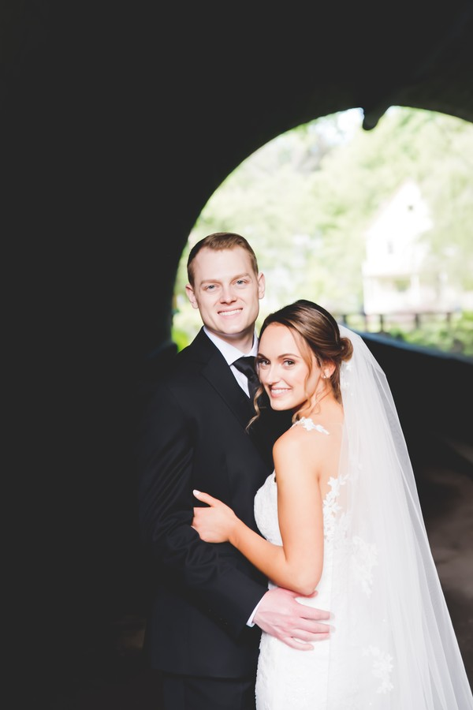
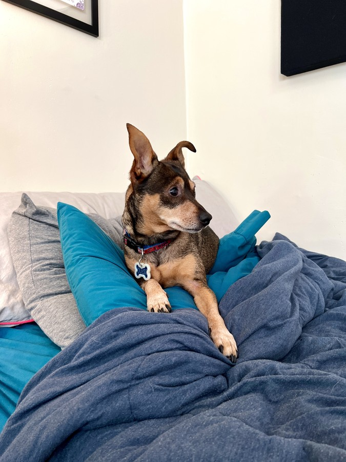
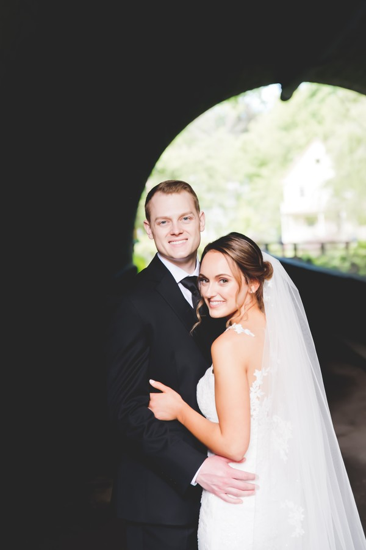
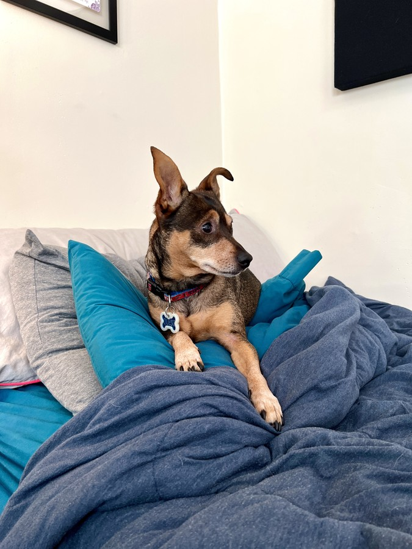

I love everything involving music, technology, and sound. I work as a machine learning engineer researching
and developing new deep learning systems for a range of audio and music technologies. I have also
consulted on the acoustical design of the built environment, with projects ranging from performance venues
to recording studios. My work and research include developing and implementing models and algorithms to perform audio
source separation, music sample generation, sound source detection, zero-shot classification, music fingerprinting,
audio enhancement, and binaural audio externalization among others. I have also developed other software to measure
acoustics metrics, model wave behavior, process spatial audio, and create audio effects plugins.
When I am not focused on the design of sound and technology through my work or research, I am writing,
recording, or performing music. I play guitar (electric, acoustic, bass), percussion, piano, and even
dabble with the banjo. My artist name is
After August
(check me out on Spotify),
and I play musical styles
from rock to jazz to folk and everything in between. I love all types of music.
I live in Chicago with my wife, Steph, our son, Myles, and our little dog, Queso. Steph works as an
interventional radiology nurse at Northwestern Memorial Hospital assisting with groundbreaking operations daily
and Queso takes naps on my lap daily as I work at my desk. I play in the local kickball league and love to
escape to the Finger Lakes and Adirondack Mountains in NY each summer for some hiking, kayaking, and time with the family.

 


